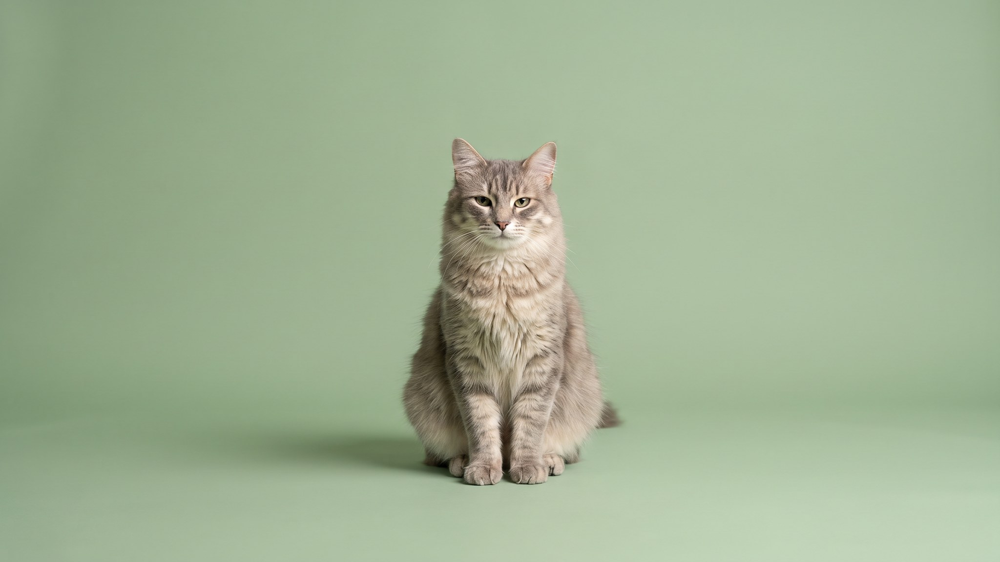

Кошку проще осматривать, когда она сохраняет опору под лапами и может закончить контакт в любой момент. Для приучения достаточно коврика, лакомства и короткого занятия с одной зоной тела. Ниже даны подготовка места, шаги для ушей, лап и рта, критерии остановки и чек-лист домашней частоты.
🐾 Чтобы уход не держать в голове
AnimaLife напомнит, когда стричь когти, вычёсывать, купать и обрабатывать от паразитов, и заведёт дневник по вашему питомцу. Бесплатно.
Настроить напоминания → Настроить в MAX →
У вас iPhone? AnimaLife есть в App Store
Выберите устойчивый стол или тихий участок пола с нескользким ковриком. Положите рядом мягкое лакомство, небольшую лампу и записную книжку. Инструменты для чистки на первых занятиях не нужны. Задача сейчас состоит в спокойном контакте и визуальном осмотре доступных участков.
Начинайте, когда кошка бодрствует и спокойно подходит к человеку. Позовите её на коврик, но не переносите туда руками. После первого шага на коврик дайте лакомство и отодвиньте руки. Повторите приглашение несколько раз. Коврик должен предсказывать награду и свободный уход.
Заранее выберите слово завершения, например «всё». Произнесите его, уберите руку и прекратите показ лакомства. Если кошка уходит на любом этапе, занятие заканчивается без погони. В следующий раз вернитесь к более короткому касанию или только к приходу на коврик.
Проводите занятие один раз в день по одной или двум минутам. Несколько дней повторяйте один уровень, пока кошка свободно принимает лакомство и остаётся на коврике. Переход к следующей зоне не означает, что нужно осмотреть всё тело за один вечер.
Когда все этапы стали привычными, полный визуальный осмотр проводите раз в неделю. В остальные дни оставляйте один короткий контакт. Одна спокойная проверка полезнее полного осмотра через сопротивление. Для чистки или стрижки потребуется отдельное приучение к соответствующим инструментам.
При комфортном контакте кошка продолжает есть лакомство, мягко двигает хвостом и смотрит на руку без резкого напряжения. Она может изменить положение корпуса, затем снова приблизиться. После окончания животное остаётся рядом или спокойно уходит к привычным делам.
Не увеличивайте длительность после того, как кошка уже перестала есть или начала выворачиваться. Закончите на знакомом лёгком касании в следующий раз. Спокойствие проверяют по возможности принять паузу. Если животное снова подходит к коврику позже, предложите только лакомство без осмотра.
Покажите кошку врачу, если она внезапно перестала разрешать привычное касание конкретного места, прячется после лёгкого контакта или резко меняет обычное поведение. Обратите внимание на новые покраснения, выделения, запах и повторное почёсывание одной зоны. Не нажимайте повторно, чтобы проверить силу реакции. Запишите наблюдения и договоритесь об осмотре.
🐾 Заведите дневник ухода за кошкой
Вес, шерсть, обработки, прививки — всё в одном месте. А если что-то смущает, AI-ветеринар ответит круглосуточно и бесплатно.
Завести дневник → Завести в MAX →
У вас iPhone? AnimaLife есть в App Store
🐾 Понравился разбор?
Подпишитесь на канал — каждый день разбираем по одному тревожному симптому у кошек и собак: что в пределах нормы, а когда пора к врачу. Подпишитесь, чтобы не пропустить разбор, который может спасти здоровье вашего питомца.
Материал носит информационный характер и не заменяет очную консультацию ветеринара.